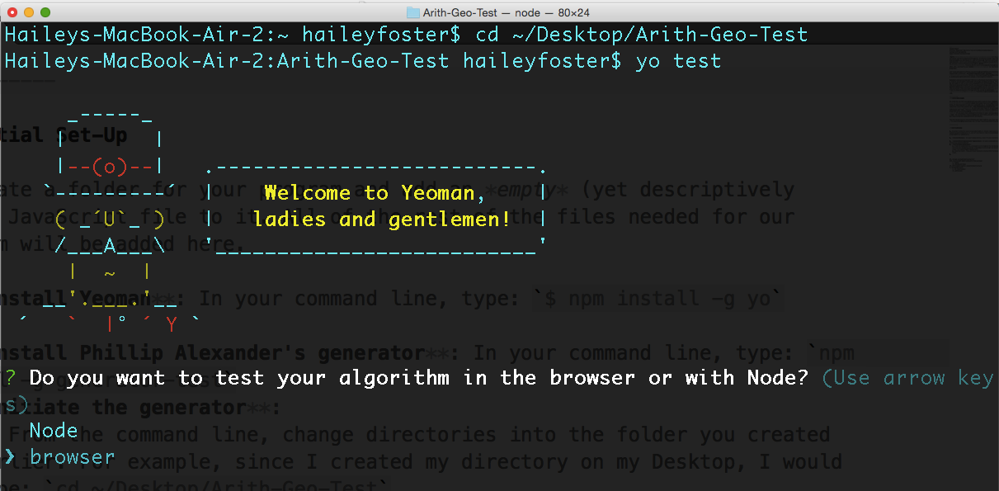
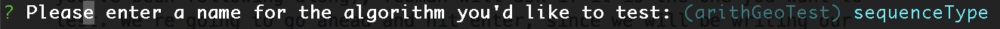
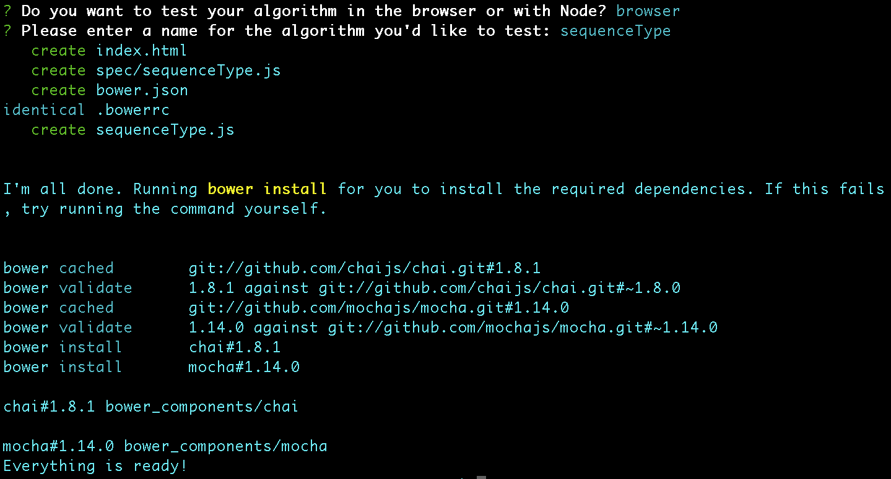
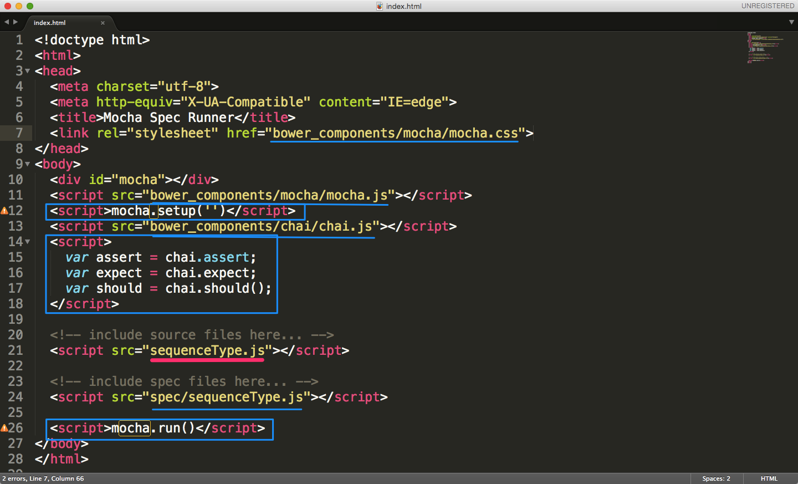
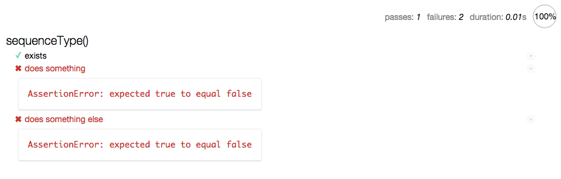
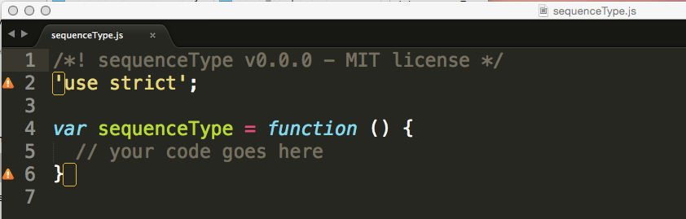
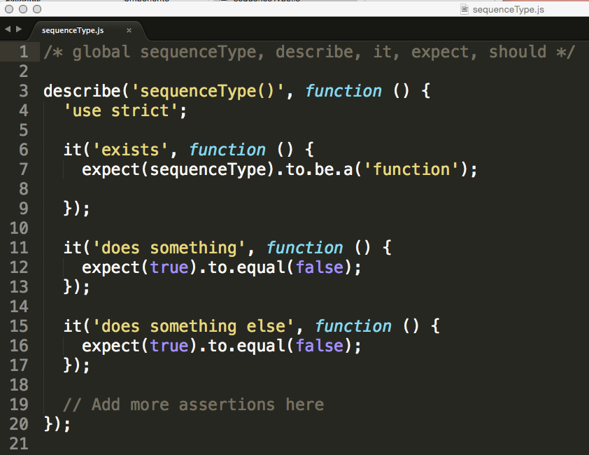

A Beginner's Guide to Test Driven Development, Part 2
JavaScript testingPart 1 of this short series on test driven development gave a brief overview or what TDD is, explained why you would use it, and introduced a few tools with which you can implement it. Part 2 will provide you with a step-by-step guide for how to set up a basic TDD environment using Mocha and Chai. We will actually implement this environment in Part 3, and finally, Part 4 will provide additional details about when, why, and how to use Sinon to test more complex programs.
Let's say you want to write a JavaScript program that will determine if a sequence of numbers is arithmetic, geometric, or neither. This is a fairly straightforward task that gives us a good example with which to set-up a testing environment.
Remember, the main premise of TDD is to write and test small units of code at a time to minimize the chances of writing a hard-to-catch-bug. This means that we will want to set up our environment before writing any code. Of course, there are many options for how to go about setting up your environment depending upon your level of experience. The goal of this post is to simplify the process so that novice programmers will be more likely to use these tools from the beginning. Therefore, we will be using a generator from Phillip Alexander for our initial set-up.
Before Moving On
In order to use the test generator, you will need to have Node.js installed and have some familiarity with your command line. If you have yet to use your command line, I recommend going through at least the first few chapters in The Command Line Crash Course to get over your fear of breaking your computer (which you won't do). There are many options for installing Node; check out a clear set of directions here if you use a Mac. Node will allow us to use a package manager called npm to install the remaining tools we will need, and will allow us to run our tests from the command line if we choose.
We will also be installing Yeoman in our initial set-up, but you don't actually need to understand what it is or how it works.
Initial Set-Up
Create an empty folder for your program. All of the rest of the files needed for our program will be added here.
Install Yeoman: In your command line, type:
$ npm install -g yoInstall Phillip Alexander's generator: In your command line, type:
npm install -g generator-testInitiate the generator:
- From the command line, change directories into the folder you created earlier. For example, since I created my directory on my Desktop, I would type:
cd ~/Desktop/Arith-Geo-Test. - Type
yo test. This will use Yeoman to install the files you will need. At this point, your command line should look something like this: 
- From the command line, change directories into the folder you created earlier. For example, since I created my directory on my Desktop, I would type:
You now need to decide if you want to run your tests in the browser, or in Node. I recommend using the browser unless you are already comfortable with Node, and the remainder of this tutorial will make use of the browser for our tests. Use your arrow keys to make your choice, and hit enter.
The generator will now ask for the name of the algorithm you'd like to test. Enter a name for the program you want to write. We're going to call ours
sequenceType. Note that if you already have some JavaScript files in your directory, the generator will ask you to choose one of these instead, and base the rest of the set-up upon this existing file.

- After entering your choice, the generator will do its thing and create all of the files you will need to run your unit tests. It will also install another package manager called Bower so it can install all of the dependencies you'll need—in our case, this is Mocha and Chai. 
The TDD Scaffold
Now when we look in our previously empty directory, we should see the following file structure:
Bower Components: contains the packages for Mocha and Chaibower.json: lists the packages downloaded by Bower—useful for installing updates if needed in the futureindex.html: the html file through which we will run our testssequenceType.js: our JavaScript filespecsequenceType.js: the JavaScript file within which we will write our tests. Also called the spec file.
Although we need the packages stored in the Bower Components, we don't need to do anything with them. If you are curious, by all means feel free to explore the contents of this folder. What we really care about is the index.html file, and the two sequenceType.js files. Note that both the spec file and our program have the same name, but are located in different places in our directory. If this is confusing, you can change the name of the spec file, but you'll need to be careful to change it every it is referenced from within the generated documents.
Let's begin by opening the index.html file in your text editor.

Notice that the generator has automatically set up our index.html file for us:
- The meta and title elements have been created
- The css file from the Mocha package is referenced
- The Mocha, Chai, spec, and algorithm scripts are referenced
- Scripts needed to setup and run Mocha and Chai are embedded
If we open this file in the browser, we will see a nicely formatted document with some dummy text.

Don't worry about what any of this means, or where it came from yet. We'll get there.
Next, let's open up our program, sequenceType.js

The generator has pre-populated our file for us, but we can alter it as we like. Feel free to remove the first two lines entirely if you wish.
Finally, let's look at that spec file from spec/sequenceType.js. This is the one we're really interested in.

Again, the generator has pre-populated this file for us with a small template. The lines starting with describe and it are from the Mocha framework, while the lines starting with expect come from Chai.
You should now be ready to actually start using TDD to write your program. Feel free to start playing around, or watch out for Part 3: Implementing TDD.